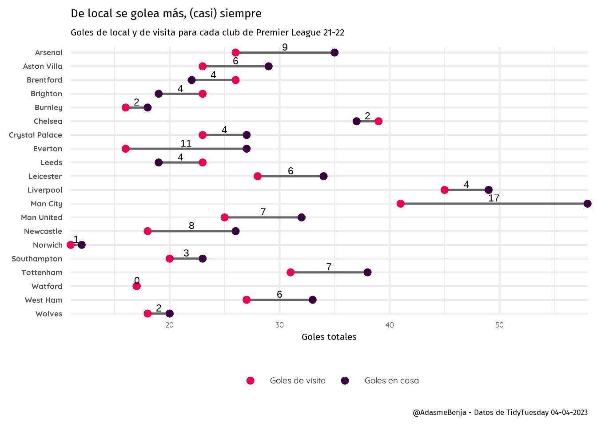

En esta edición de Tidy Tuesday del 04 de abril de 2023 trabajamos con los datos de la Premier League temporada 2021-2022, donde nos entrega la data de cada partido y sus resultados. Con esto, quisimos consultar la cantidad de goles de local y de visita de cada equipo, para saber si la capacidad goleadora se ve afectada por el estadio.
---- Compiling #TidyTuesday Information for 2023-04-04 ----
--- There is 1 file available ---
── Downloading files ───────────────────────────────────────────────────────────
1 of 1: "soccer21-22.csv"
epl_21_22 <- data_14$`soccer21-22`
Luego, cargamos las fuentes elegidas para este gráfico
# A tibble: 6 × 4
Team home_goals away_goals goal_dif
<fct> <dbl> <dbl> <dbl>
1 Arsenal 35 26 9
2 Aston Villa 29 23 6
3 Brentford 22 26 -4
4 Brighton 19 23 -4
5 Burnley 18 16 2
6 Chelsea 37 39 -2
Luego selecciinamos solo los goles, reordenamos los equipos para que aparezcan alfabéticamente, y modificamos la forma de la tabla, para que quede en un formato “long”.
# A tibble: 6 × 3
Team H_A goals
<fct> <chr> <dbl>
1 Arsenal home_goals 35
2 Arsenal away_goals 26
3 Aston Villa home_goals 29
4 Aston Villa away_goals 23
5 Brentford home_goals 22
6 Brentford away_goals 26
Pasamos el dataset en formato “long” a ggplot2 y configuramos todos los detalles.
tot_long %>%ggplot(aes(y = Team, group = Team)) +geom_segment(data = segmentos,aes(x = home_goals, xend = away_goals, yend = Team),color ="gray40", linewidth =0.9) +geom_point(aes(x = goals, color = H_A), size =2.5) +geom_text(data = segmentos,aes(y = Team, x = (away_goals + goal_dif*0.5), label =abs(goal_dif)),position =position_nudge(y =0.4),size =6) +scale_color_manual(values =c("#e90052", "#38003c"), # Colores oficiales PL labels =c("Goles de visita", "Goles en casa"),name =NULL) +labs(x ="Goles totales", y =NULL, caption ="@AdasmeBenja - Datos de TidyTuesday 04-04-2023",title ="De local se golea más, (casi) siempre", subtitle ="Goles de local y de visita para cada club de Premier League 21-22") +coord_cartesian(expand = F,clip ="off") +theme_minimal(base_family ="quick", base_size =16) +theme(#plot.background = element_rect(fill = "#07F2F2"), title =element_text(family ="fira"),axis.text.y =element_text(face ="bold"),legend.position ="bottom",legend.direction ="horizontal",legend.text =element_text(size =14)#,# legend.key.size = unit(0.5, "cm") )

Guardamos el gráfico como imágen para exportar y compartir.